How to install mercurial.
Table of Contents
1 はじめに
- このドキュメントはSCM Boot Camp in Tokyo(2011-07-30)配布資料の原稿です。
- mercurialのインストールドキュメントがgithubに上がっていることに疑問を覚えないこと。
2 Mercurialの入手方法
次のURLから取得できます。
3 Windowsの場合
Windowsの場合、次の選択肢からMercurialをインストールする方法を選ぶことが出来ます。
| 要求 | インストール方法 |
|---|---|
| GUI を利用したい場合 | TortoiseHgをインストール |
| CUI Windows版バイナリ を利用したい場合 | MSI installer もしくはInno Setup installer を使ってインストール |
| CUI Cygwinから利用したい場合 | Linux/Cygwinの場合を参照 |
3.1 TortoiseHgをインストール
MercurialをGUIで利用したい場合はTortoiseHgをインストールしてください。TortoiseHgインストール後、OSの再起動は必要ありません。
3.1.1 インストール
1.まず http://mercurial.selenic.com/downloads/ からTortoiseHgのインストーラをダウンロードします。
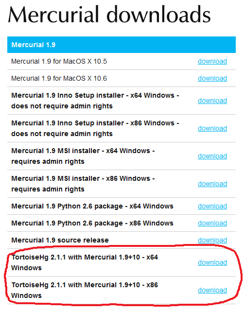
2.ダウンロードしたTortoiseHgインストーラを実行します。
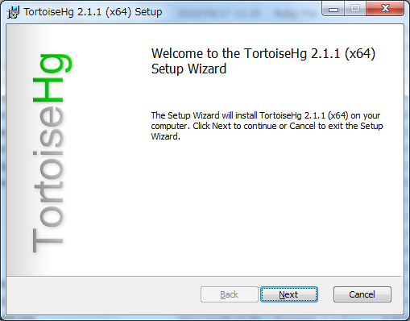
3.ライセンスに同意します。問題無ければ「Next」をクリックします。

4.インストール内容の確認を行います。インストール先を変更する場合は「Browse」を。問題無ければ「Next」をクリックします。

5.インストール前の確認です。問題無ければ「Install」をクリックします。
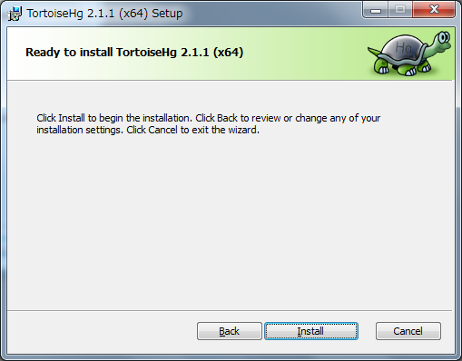
6.インストールが開始されます。
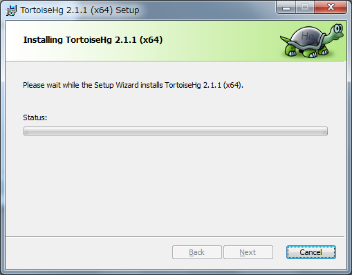
7.インストール時にエクスプローラの再起動を要求されます。問題無ければ「OK」をクリックします。
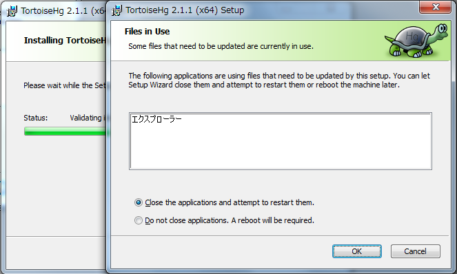
8.問題が無ければインストール完了です。
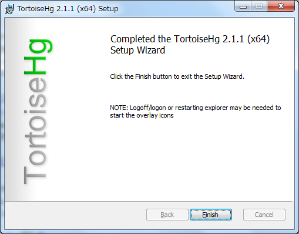
3.1.2 インストール後の確認
エクスプローラの右クリックメニューを確認してみましょう。
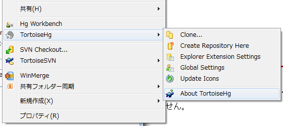
「About TortoiseHg」をクリックして見ましょう。
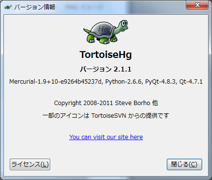
3.1.3 KDiff3の代わりにWinMergeを利用する
TortoiseHgにはKDiff3がバンドルされていますが、いまいち使いにくいのでWinMergeを利用するように変更します。
右クリックメニューから「Global Settings」を選択します。
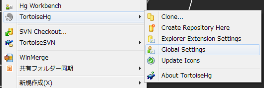
「TortoiseHg」の「3-wayマージツール」、「GUI差分表示ツール」のプルダウンから「winmergeu」を選択します。
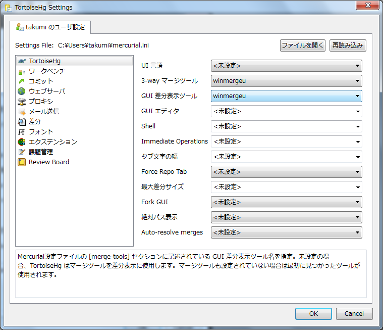
3.2 MSI installerを使って
GUIシェル拡張は不要でhgコマンドのみインストールしたい場合は MSI installer を利用してインストールします。
3.2.1 インストール
1.まず http://mercurial.selenic.com/downloads/ からMSI installerダウンロードします。
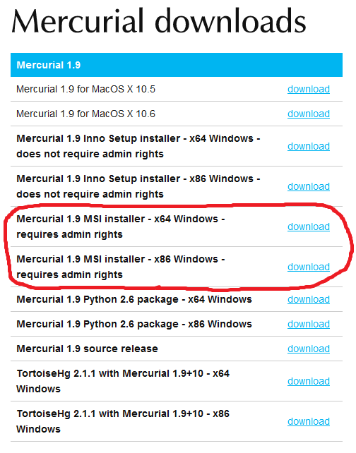
2.ダウンロードしたTortoiseHgインストーラを実行します。
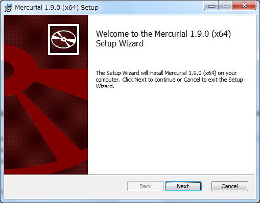
3.ライセンスに同意します。問題無ければ「Next」をクリックします。
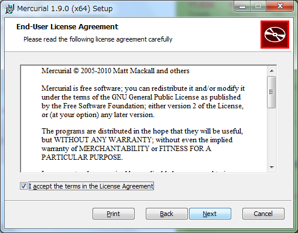
4.インストール内容の確認を行います。インストール先を変更する場合は「Browse」を。問題無ければ「Next」をクリックします。
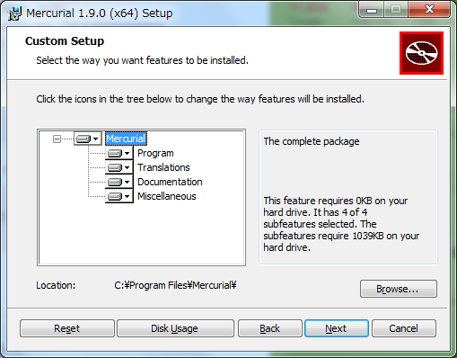
5.インストール前の確認です。問題無ければ「Install」をクリックします。
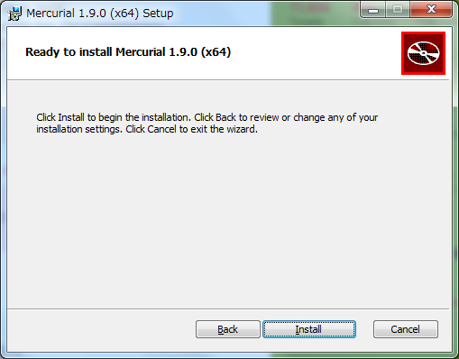
6.インストールが開始されます。
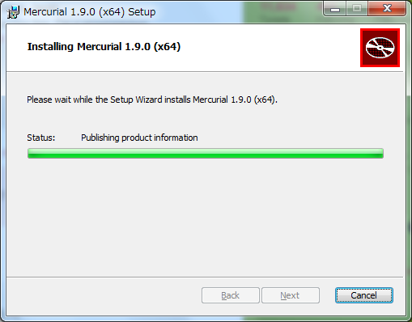
7.問題が無ければインストール完了です。
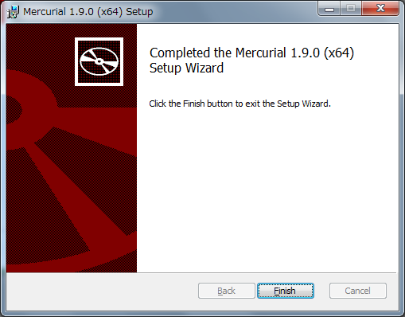
3.3 Inno Setup installerを使って
MSI Installerは管理者権限が必要でしたが、Inno Setup installerを利用すると一般ユーザでもインストールが行えます。
インストール方法はMSI Installerと同じですので、ここでは説明を割愛します。
4 MacOSXの場合
4.1 MacHgのインストール
TODO
4.2 公式バイナリから
TODO
4.3 macportsを使って
TODO
4.4 homebrewを使って
TODO
4.5 pkgsrcを使って
TODO
5 Linux/Cygwinの場合
5.1 各ディストリビュージョンのパッケージから
TODO
5.1.1 cygwin
setup.exeを使用したパッケージインストール時にmercurialを指定します。2011/07/10時点ではmercurial 1.8.1と1.7.5が用意されています。
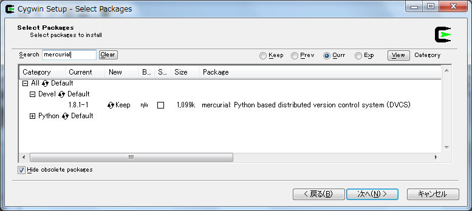
5.2 easy_installを使って
easy_install(setuptools)をつかってPyPIからMercurial 1 をインストールする事も出来ます。
システムのpythonを利用した場合、/usr/binにインストールするので気をつけてください。
5.2.1 easy_installのインストール
まずeasy_installをインストールしましょう。 easy_installはez_setup.pyというブートストラップモジュールを使ってインストールすると簡単です。
% curl -O http://peak.telecommunity.com/dist/ez_setup.py % python ez_setup.py
ez_setup.pyを利用しない場合はpypiのsetuptoolsページから適切なeggをダウンロードし、シェルスクリプトとして実行します。
% curl -O http://pypi.python.org/packages/2.6/s/setuptools/setuptools-0.6c11-py2.6.egg % sh setuptools-0.6c11-py2.6.egg
5.2.2 easy_intallでmercurialをインストール
easy_installを使ってmercurialをインストールします。
% easy_install -U mercurial
5.3 ソースから
mercurial 1.4以降はdocutilsというパッケージに依存しています。easy_installを利用する場合は依存関係解決の中で自動的にインストールされますが、 ソースからインストールする場合は自前でインストールする必要があります。
5.3.1 docutilsのインストール
easy_installを利用する事も出来ます。
% easy_install -U docutils
ソースコードからインストールする場合は、docutilsのサイトからアーカイブを取得します。
% tar zxvf docutils-0.8.tar.gz % cd docutils-0.8 % ./setup.py install
5.3.2 mercurialのソースコードアーカイブの取得
ソースコードアーカイブを取得、展開します。
% curl -O http://mercurial.selenic.com/release/mercurial-1.9.tar.gz % tar zxvf mercurial-1.9.tar.gz % cd mercurial-1.9
mercurialにはconfigureスクリプトは同梱されていないので、適切にmakeコマンドに引数を与えてインストールします
5.3.3 ユーザ毎にインストール
~/bin、~/lib以下にインストールする場合です。
% make install-home
5.3.4 システムワイドにインストール
/usr/local以下にインストールする場合です。
% make install
プレフィックスを変更する場合はPREFIXを指定します。
% make install PREFIX=/path/to/mercurial
6 参考文献
Footnotes:
Date: 2011-07-10 15:42:52
HTML generated by org-mode 6.33x in emacs 23